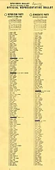
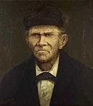
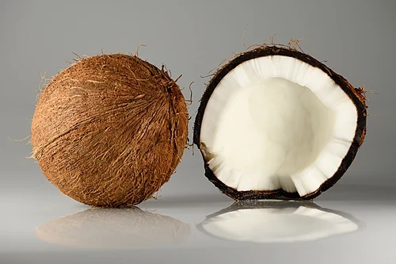

From today`s featured article
On November 3, 1964, Illinois chose all 177 members of the state`s House of Representatives in a single at-large election. The goverment was required to draw new electoral districts before the eletion, each of which would choose three representatives, but both the legislatibe process and a special commission failed to produce a district map. As a result, the state`s constitution mandated the all 177 representatives were to be elected from a statewide atlarge district. the republican Party and the Democratic Party each nominated 118 candidates to appeat on the ballot ( soecimen pictured); voters were allowed to choose up to 177. All 188 Democratic candidates were elected, flipping the llinois House of Representatives from its previous narrow Republican control, alongside the concurrent presidential election won by democratic incumbent Lyndon B. Johnsonin a landslide. This election is the only time in American history that a state legislative chamber has been elected at-large.(Full article...)
Did you know...
- ...That convict James Davis(Pictured)escaped custody in Australia and lived with Aboriginal Australians for 13 year?
- ...that America`s first small-size silver certificate was referred to as a Funnyback?
- ...that the British Army deployed companies of aliensto france during the First world was?
- ...the cate Blanhettplayed 13 different characters in the multi-scrre flim installation Manifesto?
- ...that Marie Marcks sarcastically caricatured gender roles like no one before, according to gender roles like no one before, according to Jutta Limback?
- ...that the tenats of a New york city apartment buliding protested against its owner by going to a racetrack ad betting on his horse?
- ...that one of the last surviving women from rapa Nuito receive traditional facial tattos was queen consort Ana Eva Hei?
- ...that the Nualas`2015 novelty song "Yes 2 love" was created topromote a yes bote?
- ...that Ivan played for the Eaglesand the Eagles?
In the news

- A canopy collapse at Serbia`s Novi Sad railway stationkill 14 people and injures 3 others.
- The ruins of a Maya city, dubbed Valeriana, are discovered in Campeche,Mexico.
- The Botswana general electionis won by the opposition umbrella for Femocratic Change, led by Duma Boki.
- in baseball, the Los Angeles Dodgerssdefeat the NEw york yankeesto win the world Series.
-
Ongoing: israel-Hamas was . israel-Hezbollah conflict.Russian invasion of
Ukraine (timeline).Sudanese civil war (timeline)
Recent deaths:janey Godley.Edzard Reuter.jamshid sharmahd.Franz kamphaus.Tahar zbiri.Matt Peacock
On this day
November 3 : Culture day in japan
- 1793 - French Revolution: playweright,journalist and outspoken feminist olympe de gouges was guillotined
- 1898 - the Fashoda incident ended with french forces withdrawing after several months of militray stalemate with the British months of militray stalemate the british in Fashoda
- 1948 - the Chicago Daily tribunepublished the erroeous headine "Dewey Defeats Truman"(pictured) in its early mornig edition shortly after incumbent U.S. president Harry S. Truman officially upset the heavliy favored governor of new yorkThomas Dewey in the presidential election.
- 1957 - The Soviet union launched sputnik 2, carrying the space dog laika as the first living creature to enter orbit around Earth.
today`s featured picture
The coconutis a member of the palm tree family Arecaceae. Originally native to the Maritime southeast Asia amd Melanesia. coconuts are now found across the world dur to human cultivation and dispersal. They are normally cultivated in hot and wet tropical climates. The term coconut also commonly refers to the seed and fruit of the coconut tree, which is botanicall a druope. the fruit has three layers including an edible white,fleshy endosperm and is filled with a liquid known as coconut water. The coconut this played a criticak role in the migration of Austonesian peoples across the indinan Ocean, as it provided a portable source of both food and water for long se boyages. in modem times coconuts are used extensively in cooking and cuiseine, useing the raw flesh, the water or in alternative forms such as coconut milk and coconut butter, These coconuts, one whole and one halbed, wete grown in the Dominican Republic this photograph was focusstacked from 19 separate images.
Photograph credit: Ivar Leidus
Recently fuatured: mauritius kestrel.Diwali.The Cabinet of Dr. Caligari Archive.More featured pictures
Other areas of Wikipedia
- community portal- The cintral hib for editors, with resources, links, tasks,and announcements.
- Village pump- Fprum for discussions aboyr wikipedia itself, inclding policies and technical issues.
- Site news- asj basuc qyestuib about sing o editing wikipedia.
- Help desk- Ask questions about using or editing wikipedia.
- Reference desk- Ask research questions about encyclopedic topics.
- Content portals- A unique way to navigate the encyclopedia.
wikipwdia`s sister project
Wikipedia is written by volunteer editors and hosted by the Wikimedia Foundationa non-profit organization that also hosts a range of other volunteerprojects:
-
CommonsFree media repository
-
MediaWikiWiki software development
-
Meta-WikiWikimedia project coordination
-
WikibooksFree textbooks and manuals
-
WikidataFree knwledge base
-
WikinewsFree-content news
-
WikiquoteCollection of quotations
-
WikisourceFree-content library
-
WikispeciesDirectory of species
-
WikiversityFRee learnig tools
-
WikiboyageFree travel guide
-
WikitionaryDictionary and thesaurus
Wikipedia languages
This wikipedia is written in English. Many other wikipedia are available